Para la configuración de una IP estática en Centos 7 Minimal se siguen los siguientes pasos:
1. Apagamos la maquina Centos.
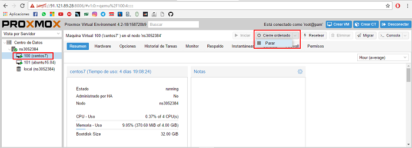
2. Seleccionamos Hardware y la tarjeta de red para hacer el cambio de la Mac virtual.
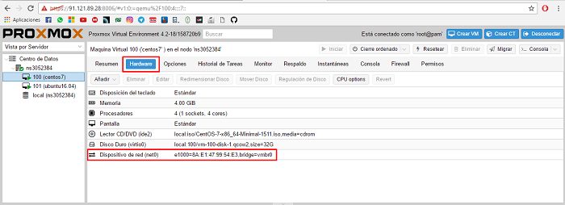
3. Aparecerá una ventana en la cual debemos cambiar la Mac que el servidor asignó automáticamente por la Mac virtual de la IP a asignar.
a. Cuando se crea una máquina virtual el servidor le asigna automáticamente su Mac física.
b. Para que la máquina virtual pueda tener internet a través de la IP pública se debe cambiar la Mac predeterminada por una Mac virtual de la IP.
c. Para crear la Mac virtual se debe realizar en el panel de administración donde se contrató el lote de IP’s.
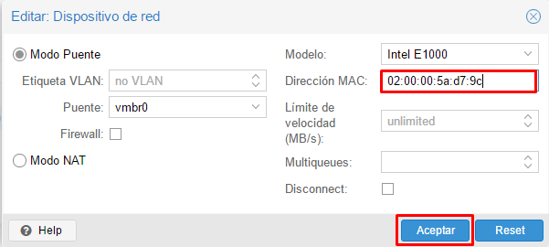
4. Inicia la máquina virtual, corroboramos que estemos en superusuario y buscamos en nombre de nuestra tarjeta de red. Para ver el nombre de la tarjeta lo hacemos con el siguiente comando “ip addr”.
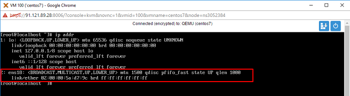
5. Entramos a configurar el archivo de IP, que se encuentra en la siguiente ruta “vi /etc/sysconfig/network-scripts/ifcfg-ens18”. Para hacer esta configuración utilizamos el editor de texto “vi”.
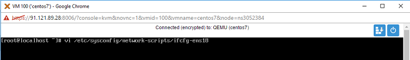
6. Unas ves dentro del archivo de configuración agregamos las siguientes líneas.
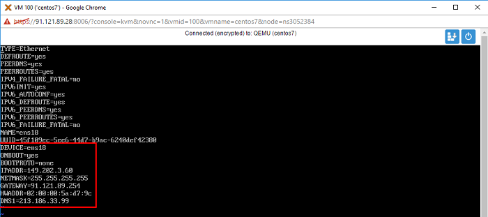
La configuración a realizar es la siguiente:
a. ONBOOT=yes.
b. OOTPROTO=none.
c. IPADDR=149.202.3.60
d. NETMASK=255.255.255.255
e. GATEWAY=91.121.89.254
f. HWADDR=02:00:00:5a:d7:9c
g. DNS1=213.186.33.99
h. 91.121.89.254 es la Gateway de la máquina virtual, la cual es la IP principal del servidor terminado el último octeto en 254.
i. El DNS agregado es el que traer por defecto la empresa donde se contrató el servidor físico.
7. Para configurar la Gateway se crea el archivo “route-ens18” en la siguiente ruta “vi /etc/sysconfig/network-scripts/route-ens18”.
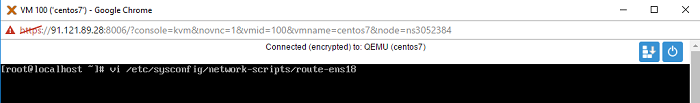
8. En el archivo “route-ens18” procedemos a agregar las siguientes líneas.
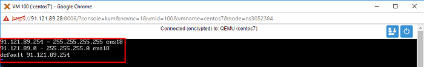
a. 91.121.89.254 – 255.255.255.255 ens18
b. 91.121.89.0 – 255.255.255.0 ens18
c. default 91.121.89.254
d. 91.121.89.254 es la Gateway de la máquina virtual, la cual es la IP principal del servidor terminado el último octeto en 254.
e. 91.121.89.0 es la red de la máquina virtual, la cual es la IP principal del servidor terminando el último octeto en 0.
9. Reiniciamos la tarjeta de red con el comando “service network restart”.
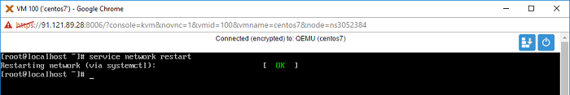
10. Comprobamos que los cambios se hayan hecho correctamente, para esto utilizamos el comando “ip addr”.
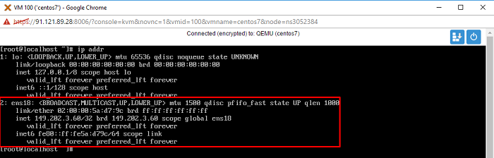
11. Comprobamos que la máquina virtual tenga conexión a internet para hacemos tecleamos el siguiente comando “ping google.com”.
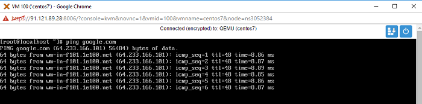
12. Hacemos una conexión remota al servidor para eso utilizamos una maquina Windows con PuTTY instalado. En Host Name agregamos la IP de la máquina virtual, verificamos que la conexión sea por SSH, y damos en Open.
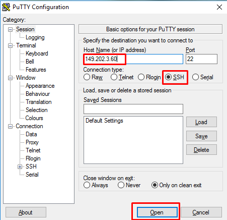
13. Seguimos a loguearnos colocando el usuario de la máquina y la contraseña, y una vez hecho este paso ya estaremos en nuestra maquina Centos 7 Minimal.
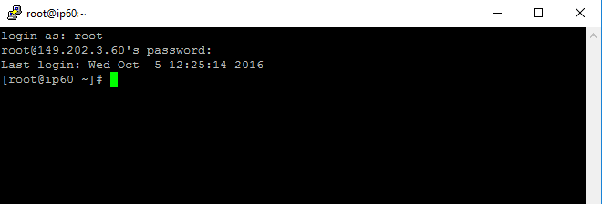